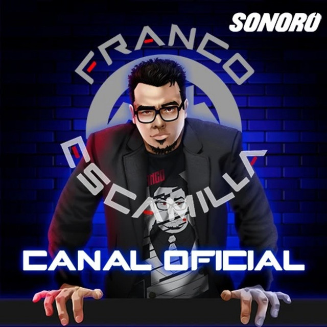

La cotorrisa es el compalero perfecto para esas tardes en las que te sientes solo, deprimido, triste y con ganas de escuchar algo de irreverencia y chistes sin filtro por parte de Slobotsky y Ricardo Perez, La Cotorrisa es justamente lo que dice en toda la expresión de la palabra, una plática o "cotorreo" entre dos grandes amigos y a veces, distintos invitados que puedan llegar a cotorrear al programa.Desde la mismísima Ciudad Juárez, Chihuahua,Leyendas Legendarias es un podcast en el que se que expone con irreverencia y humor ácido los detalles y las teorías en torno a crímenes históricos, fenómenos paranormales y misterios sin resolver, algo divertido e interesantes para los amantes de la comedia y el misterio.Si eres fan del horror, de los cuentos de miedo y fantasía, Relatos de la Noche es tu acompañante perfecto para esas tardes en las que sientes que necesitas que te espanten para poder dormir tranquilo, claro está, Relatos de la Noche, es un podcast en el que podrás escuchar lo mejor de lo mejor sobre relatos de terror/miedo.

¿Quien hoy en día que hable español a Franco Javier López Escamilla?, o bueno, a su alterego comediante ácido que es Franco Escamilla. Franco Escamilla ha logrado muchas cosas a lo largo de sus más de 10 años de carrera, haciendo reír a millones de personas a lo largo del mundo, ahora logra deslumbrar con su canal de podcast, en el podemos disfrutar del distinto contenido humorístico que crea.Ivan "la Mole" y Andrés Marcelo son una dupla rara, pero que al escucharlos resulta algo divertido, con la irreverencia desenfrenada pero cómica de La Mole y la Elocuencia entrenada por los medios y aportes culturales y hasta "ruzarines" por parte de Adrián Marcelo hace que este Podcast sea divertido e interesante.